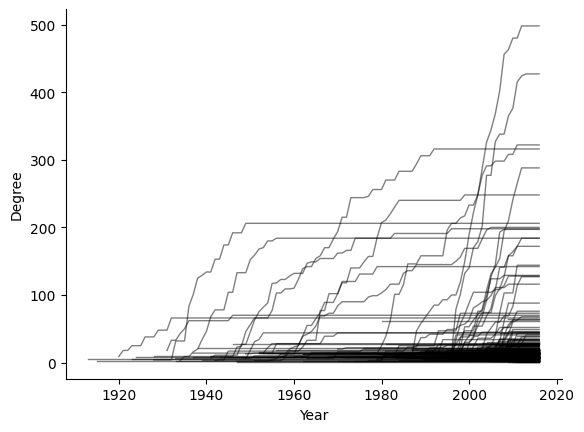
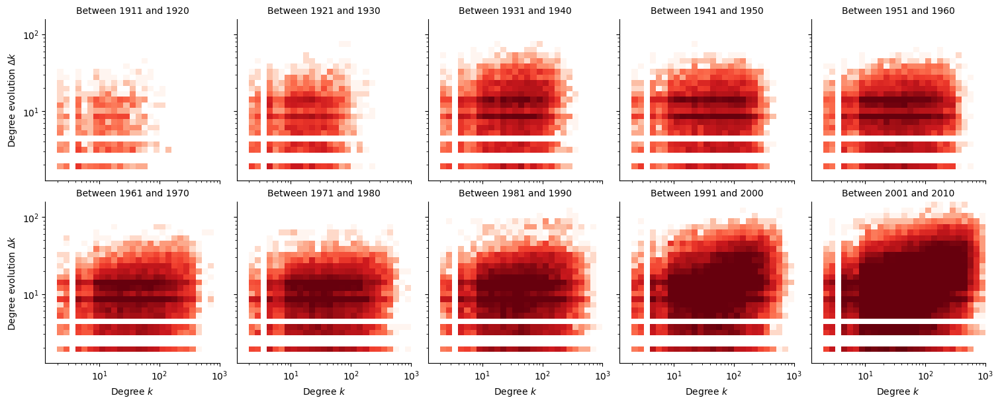
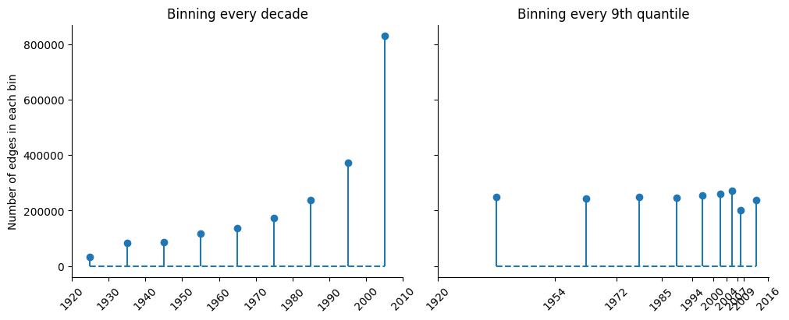
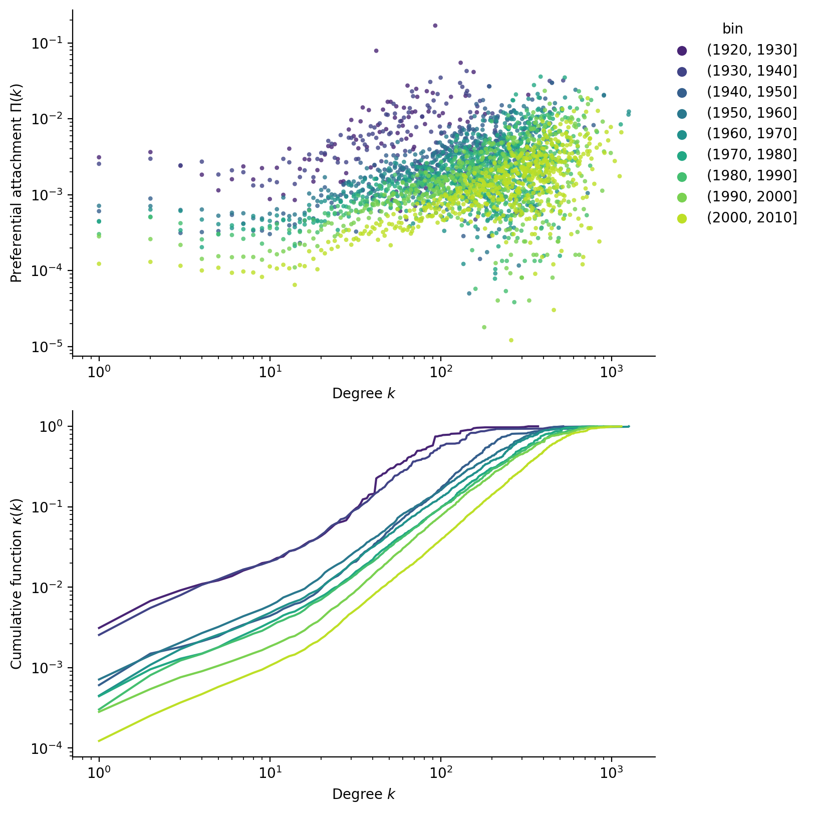
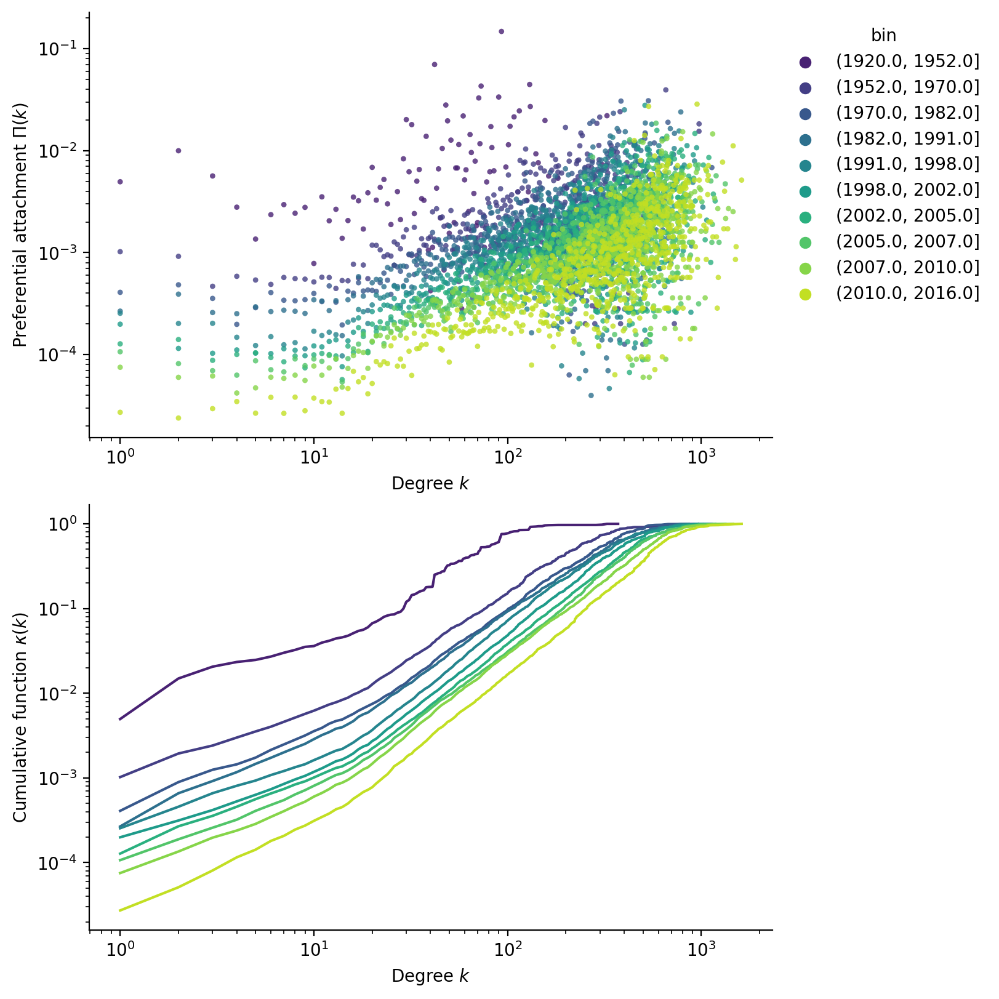
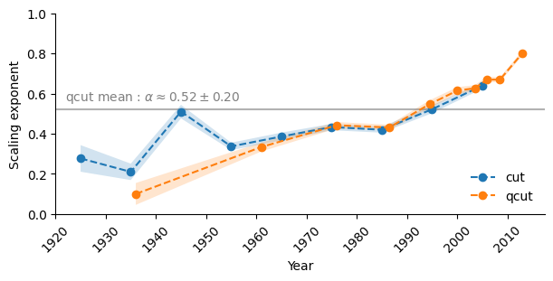
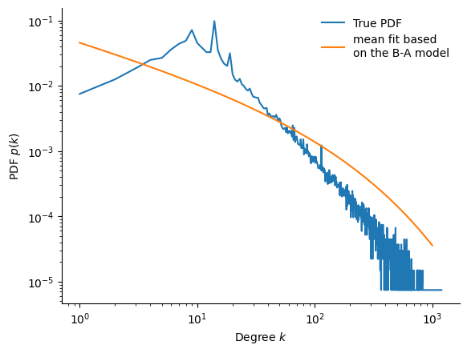
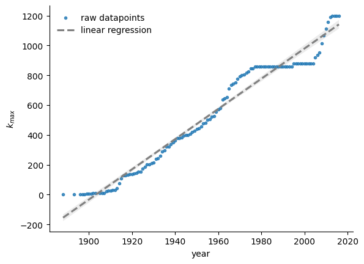

Analysis of network growth
In this section we try to understand how the network grows, more precisely how edges are formed and where new actors connect to. For this, we timestamp each edge of the actor graph with the corresponding movie release date. In this operation, about 0.75% of the original edges are dropped.
A qualitative analysis based on degree evolution
In the Barabási-Albert model (Barabási and Pósfai 2016), the preferential attachment factor \(\Pi(k_i)\) describes the probability with which a new node connects to an already existing node of degree \(k_i\). Therefore, the rate at which node \(i\)’s degree grows is proportional to \(\Pi(k_i)\).
\[ \frac{\mathrm d k_i}{\mathrm d t} \propto \Pi(k_i) \]
Note
In reality the proportionality constant depends on \(t\), and in the large \(t\) limit we get (Barabási and Pósfai 2016)
\[ \frac{\mathrm d k_i}{k_i} = \frac 12 \frac{\mathrm dt}{t} \]
Integrating and letting \(k_i^0\) be the degree with which node \(i\) first joined the network at time \(t_i^0\), we get :
\[ k_i(t) = k_i^0 \left( \frac{t}{t_i^0} \right)^\beta \]
Where the dynamical exponent \(\beta = 1/2\) describes the degree growth speed.
In the subsequent analysis of degree evolution, we neglect these subtleties in order to give a first impression. We later do a more formal analysis based on (Jeong, Néda, and Barabási 2003).
In a naive numerical approach, we inspect whether there could be preferential attachment by computing the year-to-year degree evolution of each node in the network. Figure 1 gives us a first impression of the results, where we see the actors (individual lines) grow through time, until their growth becomes stagnant due to their end of career. We notice that actors who enter late in the graph tend to grow faster !
In Figure 2, we plot a 2D histogram of the degree evolution \(\Delta k_i\) versus the original degree \(k_i\). Darker colours correspond to a higher density of samples. If there were no preferential attachement, that is \(\Pi = \textrm{constant}\), we would expect that \(\Delta k_i\) be intependant of \(k_i\). However, the general trend of this figure shows that the higher the original degree \(k_i(t)\), the more the degree grows to \(k_i(t+1) = k_i(t) + \Delta k_i(t)\), which shows that this network exhibits preferential attachment. And in accordance with Figure 1, we see that this preferential attachment is stronger when actors join the graph later.

Computing the preferential attachment exponent
Methodology
In order to formalize the results of the previous section, we compute the preferential attachment factor based on the methods explained in (Jeong, Néda, and Barabási 2003).
For the following, we consider adding edges to the graph progressively. If the edge adds a new actor to the network (“external edge”), we record the degree of the actors it attaches to. Note that we therefore do not report the degrees between two existing actors (“internal edges”), but we still add them progressively.
We want to estimate :
\[\Pi(k_i) = \frac{k_i}{\sum_j k_j} \approx \frac{\text{number of new connections to node } i}{\text{total number of new connections}}\]
Numerically, we perform this by histogramming. Therefore, the algorithm is as follows :
- Since we need an already existing population in order to estimate preferential attachment, we consider the initial graph at time \(t_0 = 1920\).
- Bin edges together based on their date.
- For each bin \((t_-, t_+)\), repeat :
- Record the degree histogram \(p(k)\) at the start \(t_-\) of each bin.
- Add the edges in the bin, and record the degree histogram \(q(k)\) of the actors that new actors connect to.
- The probability distribution \(\Pi(k)\) is obtained by dividing \(q(k)\) by \(p(k)\), and renormalizing. The denominator accounts for the fact that high degrees are more rare. If we didn’t perform this division, then we would observe little preferential attachment, as new actors connect to many low degree actors just due to the sheer number of them.
We perform binning using two methods, and plot the bin sizes in Figure 3. Binning edges together every decade gives us more control over the date at which we perform the estimation, but yields very uneven bin sizes. Binning edges together every 9th quantile (but rounding at integer years) yields more even bin sizes, but the dates are non-uniformly distributed.

Numerical results
The Barabási-Albert model can be extended to other regimes of preferential attachment. (Jeong, Néda, and Barabási 2003) defines the scaling exponent \(\alpha\) as :
\[ \Pi(k) \sim k^\alpha \]
If \(\alpha = 1\), we recover the original Barabási-Albert model (linear preferential attachment). Regimes \(\alpha < 1\) are said to be sub-linear, and \(\alpha > 1\) is super-linear. Larger values of \(\alpha\) therefore correspond to a stronger preferential attachment, and one can intuitively expect the appearance of giant hubs.
Performing the computations, we scatter the results for \(\Pi(k)\) in Figure 4. While it is clear that preferential attachment follows a power law, there is a lot of noise in the data. To address this, the paper suggests to use the cumulative function :
\[ \kappa(k) = \int^k \Pi(k') \; \mathrm d k' \sim k^{\alpha+1} \]


Performing the fit, we report the obtained scaling exponents and their 95% confidence interval in Figure 5. Using the quantile bins, we can also compute an “average exponent” to be around \(\alpha \approx 0.5\), putting this network in the sublinear regime. Both binning methods show that the exponent tends to increase with time, confirming the observation that actors grow faster as they enter later into the graph.

Comparing the model to observed results
We now ask whether this model is able to predict the observed degree distribution. In the sub-linear regime, the probability distribution follows a stretched exponential distribution :
\[ p(k) \sim k^{-\alpha} \exp \left(\frac{-2 k^{1-\alpha}}{\langle k \rangle (1-\alpha)} \right) \]
Figure 6 compares the predicted and true distributions. Unfortunately, the match is poor : what happened ? When we computed the preferential attachment, recall we ignored internal edges, however they make up about 32% of the total edges, and are therefore not neglectible.
Therefore, we predict that the true exponent must actually be greater than one, putting the model in the super-linear regime. This is further supported by Figure 7, in which we see that the largest degree grows roughly linearly, \(k_{\text{max}} \sim t\), as one would find on the super-linear regime (Barabási and Pósfai 2016).


References
Barabási, Albert-László, and Márton Pósfai. 2016. Network Science. Cambridge University Press. https://books.google.ch/books?id=iLtGDQAAQBAJ.
Jeong, H., Z. Néda, and A. L. Barabási. 2003. “Measuring Preferential Attachment in Evolving Networks.” Europhysics Letters 61 (4): 567. https://doi.org/10.1209/epl/i2003-00166-9.